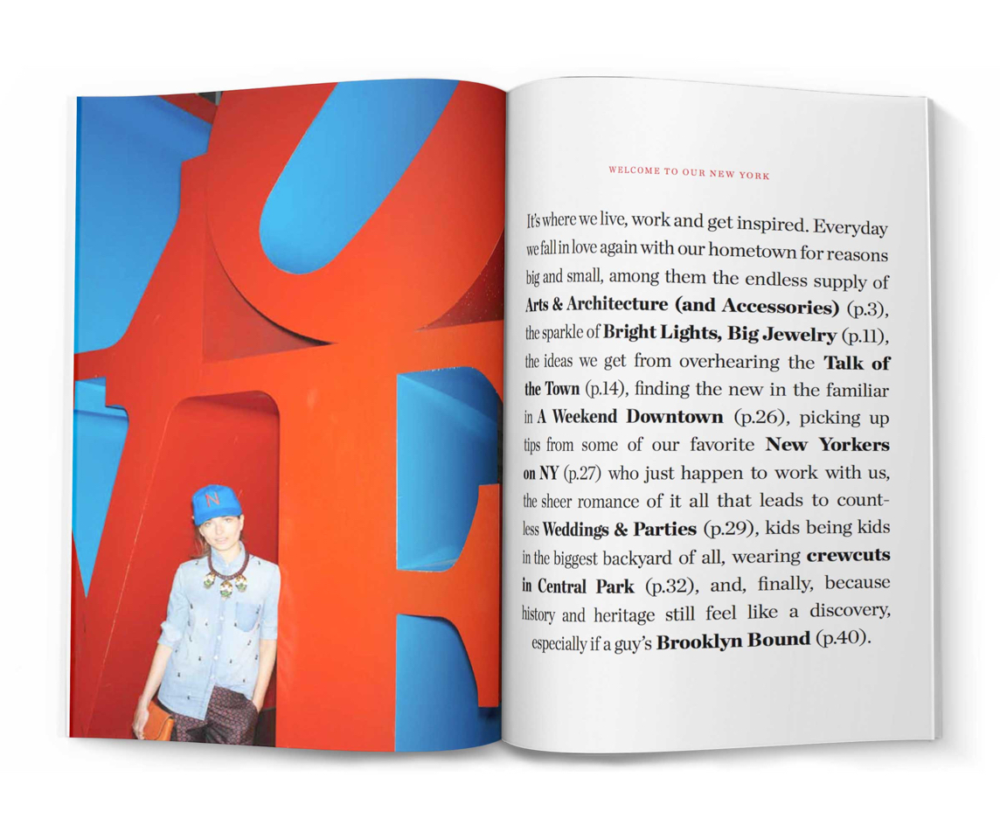
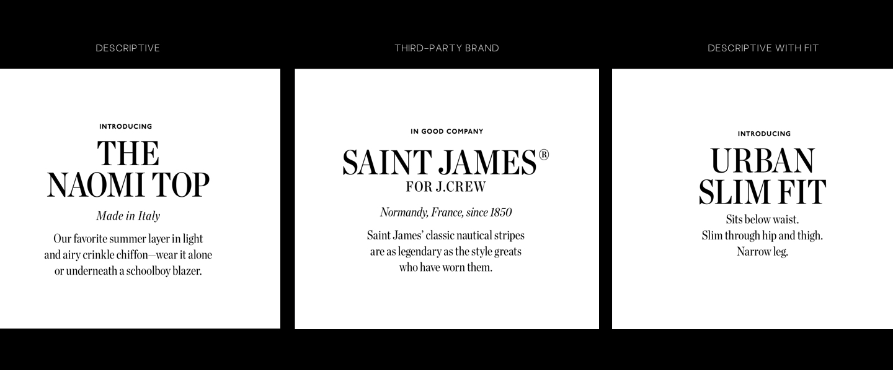

This work was completed with the amazing talent of J.Crew, under the direction of CEO Mickey Drexler, President Jenna Lyons, VP Creative Johanna Langford. The team I led consisted of Lauren Richel Kelly, Heather Rosenthal, Amanda Pastenkos, Roya Seradj, Rosie Snow, Holly Stevenson, Molly Desmond, Les Griffith, Christine Bombard, Hanah Ho, Daniel Wiggins, Emma Gaines-Ross, and more. All writing by Alison Griffin, Halsey Anderson, Lisa Lundy and their team.
In 2013 I was recruited to become Design Director of J.Crew’s newly formed marketing department. For 30 years the retail company’s marketing was delivered to your doorstep in the form of a catalog. While this drove traffic to their hundreds of stores and e-commerce site, advertising, branding and marketing where one-off and definitely afterthoughts.
fig7.1 · Photography taken in-house (with Roya Seradj) for the “Made in Italy” women's shoe campaign.
Lead by the mythical Brooklyn-native CEO Mikey Drexler and the legendary, Jenna Lyons, as president the brand took off in the early 2000s, investing in third party heritage brands, expanding its demographic with its sister brand Madewell and hiring R/GA and Kate Spade alum, Johanna Langford, as VP of Creative to help tell the story. Joanna hired me and taught me a lot. Our team told brand stories through all channels, connecting a sprawling organization that was expanding worldwide at a rapid pace.
fig7.2 · A 16-page insert of Crewcuts (J.Crew's children's clothing line) featured in Vogue magazine.
I lead a team of nine designers. We sat in the middle of a catalog and e-commerce publishing cadence. We reviewed all of our work with Jenna biweekly. We focused on the opening spread of the catalog, advertising campaigns online, out of home and in print, the monthly store marketing and story-tellingly, website refreshes, 3 emails (men,women and kids!) every single day, printed materials and anything else you can imagine. This resulted in our stewardship of the brand across packaging and new store openings from malls in my hometown (midwest!) as well as boutiques on New York's Madison Ave and London's High Street.
fig7.3 · Sketches for branded hangtags to accompany store openings in London.
Connecting each month's story from catalog photography, through to store experience was our challenge. It combined experiences I'd had in working in magazines, museums, & retail all in one. This manifested in an array of touchpoints which the customer may never see in the same order, from the opening spread of the catalog, the homepage of the website, to full-page ads in the Wall Street Journal.
fig7.4 · Opening spread of J.Crew's New York City-themed catalog.
On top of the monthly cadence of new items in store (and new catalogs in the mail) we managed a daily cadence of email marketing. While often a dispised medium, work worked tirelessly to present real content to users with unique photography, snappy headlines and in-depth content on items, trends and styling. We sent three emails a day (men's, women's and kid's) and always a sale or two thrown into the editorial calendar.
fig7.5 · A sample of maybe two days worth of emails created by Heather Rosenthal, Christine Bombard, & Hanah Ho.
One of my first (and endless) assignments was to create systems—for everything! Not only did the brand have at least four (different!) logos being used at any given time, it had a host of “sub brands” (J.Crew Collection, J.Crew Jewery, J.Crew Factory, Very Personal Stylists) all with their own flavor and fonts. Oh, and fonts were divided by gender. Didot for women and Caslon for men.
fig7.6 · J.Crew's previous division of gender via serifs.
The obvious and outdated stereotypes this fed into were one thing—the typographic chaos was another. And despite our opinions on gender, the “female” and “male” products remained quite different and shared little aesthetically. That is except for a few adjectives, like clean, bright and powerful. We went on a mission to unite the two and ended up delivering an exciting (or boring) presentation on typography and gender to the company’s leaders. This resulted in moving to Hoefler's Chronicle (a "blended scotch" roman) to bridge the divide, it ended up being adopted by the catalog team. One small step.
fig7.7 · Three of thousands of signs using the Chronicle typeface and new system.
For more about this project please get in touch ↗
2015 · Creative Direction, In-House
2017 · Design & Direction, Work & Co.